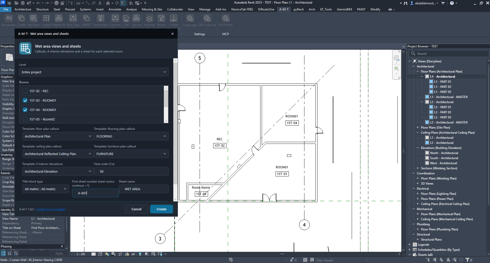
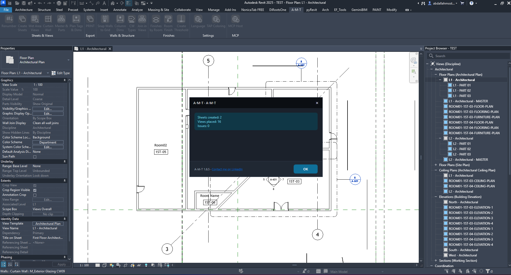
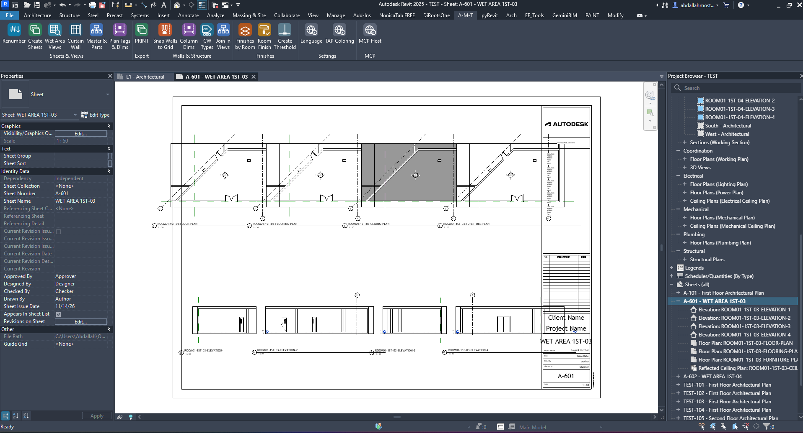

Wet Area Views
Create coordinated wet-area documentation for selected rooms in one workflow.
Sheets & ViewsVisual walkthroughHow the command works
Configure rooms and view templates

Choose the rooms to document
Level: select a specific level or use Entire project to work across the project. In the Rooms list, tick each room that needs wet-area views; the room number and name help identify it.
View templates: assign separate templates for the floor plan callout, flooring plan callout, ceiling plan callout, furniture plan callout and the four interior elevations. The command uses these selections to create the corresponding views.
Set scale and sheet details
View scale (1:x): enter the scale to apply to the generated views; the example shows 50.
Title block type: choose the title block for the new sheets. First sheet number: enter the starting number; subsequent room sheets continue from it. Sheet name: enter the name to use for the generated sheets, such as “WET AREA”.
Review the selected rooms and settings, then click Create.
Review the creation report

Confirm the result
When the command finishes, the report summarizes the output. In this example, it created 2 sheets and placed 16 views, with 0 issues. Click OK to close the report and inspect the generated sheets in the Project Browser.
Inspect the generated wet-area sheet

One coordinated sheet per selected room
The example sheet combines the room’s plan-based callout views across the upper area with its four interior elevations along the lower area. The generated sheet is visible in the Project Browser with its associated views nested beneath it.
Open the created sheets and check view placement, annotation visibility, title block information and the selected templates before issuing the set.
Watch Wet Area Views in Action
Watch the complete command workflow inside Autodesk Revit.
Run the command checklist
Choose the level and rooms → assign the five view-template categories → set scale and sheet details → click Create → review the report → inspect the generated sheets.
Back to All Tools